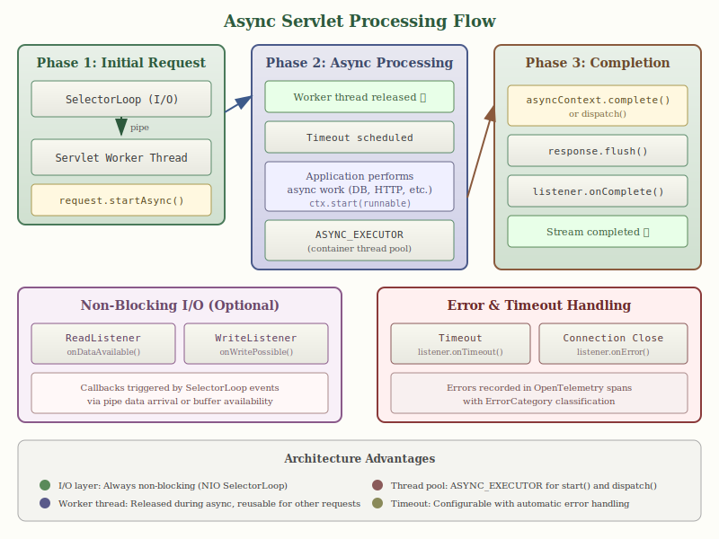

Gumdrop provides a complete, conformant Java Servlet 4.0 container as part of its multiserver framework. This document describes the architecture, configuration, and features of the servlet container.
The servlet container was the original motivation for the Gumdrop project,
first released in early 2005 as a complete implementation of the Servlet
2.4 API. At that time, mainstream enterprise servlet
containers used blocking java.net.Socket implementations which
directly linked the number of incoming TCP connections to threads in the JVM.
This created a significant scalability bottleneck: a server with 1,000
concurrent connections required 1,000 threads, consuming memory and CPU
resources for context switching. Practically, simultaneous client connections
above this number were impossible.
Gumdrop was designed from the ground up to use non-blocking I/O via the then-new Java NIO Selector API. This architecture completely decouples the number of client connections from the number of servlet worker threads, which are drawn from a separate thread pool (ThreadPoolExecutorService) of configurable size.
The servlet specification requires that servlets read request body data
from an InputStream, a blocking API that doesn't naturally
fit an event-driven architecture. Gumdrop solves this with a pipe-based
multiplexing approach:
ReadListener to be notified when data
becomes available, avoiding blocking entirely.This design means that even with tens of thousands of concurrent connections, the server requires only a small number of threads: the I/O worker pool (defaulting to twice the number of processors) plus the servlet worker pool (configured separately). Both pools are independent of connection count.

Gumdrop provides complete Servlet 3.0+ asynchronous processing support, allowing servlets to perform long-running operations without blocking worker threads. This is particularly valuable for applications that need to wait for external resources (databases, remote APIs, message queues) while maintaining high throughput.
When a servlet calls request.startAsync(), Gumdrop:
service() method completes,
freeing it to handle other requests.
The AsyncContext provides methods for completing or
re-dispatching the request:
start(Runnable) - Executes the runnable on a container-managed
thread pool (ASYNC_EXECUTOR), not on the calling thread.complete() - Flushes the response, notifies listeners, and
ends the request/response cycle.dispatch() - Re-invokes the servlet on a container thread,
useful for completing processing after an async operation.dispatch(path) - Forwards to a different servlet path for
completion.setTimeout(long) - Sets the timeout in milliseconds.
Servlet 3.1 introduced non-blocking I/O through the ReadListener
and WriteListener interfaces. Gumdrop implements these by
integrating with the underlying SelectorLoop event system:
onDataAvailable() callback is
triggered when data arrives on the pipe from the SelectorLoop. The
onAllDataRead() callback fires when the request body is
complete.onWritePossible() callback is
triggered when the output buffer has capacity. The implementation checks
the ResponseOutputStream buffer state to determine readiness.
// Example: Non-blocking read
input.setReadListener(new ReadListener() {
public void onDataAvailable() throws IOException {
while (input.isReady()) {
int b = input.read();
// process byte
}
}
public void onAllDataRead() throws IOException {
asyncContext.complete();
}
public void onError(Throwable t) {
// handle error
}
});
Async processing integrates with Gumdrop's telemetry system. Errors during
async processing are recorded in OpenTelemetry spans with appropriate
ErrorCategory classification:
ErrorCategory.TIMEOUT
is recorded and listeners receive onTimeout() callbacks.onError() is called with an IOException and
the error is recorded in the span.start()
runnables are caught, logged, and propagated to onError()
listeners.
To enable async support for a servlet, set async-supported
in the deployment descriptor or use the @WebServlet annotation:
<servlet> <servlet-name>AsyncServlet</servlet-name> <servlet-class>com.example.AsyncServlet</servlet-class> <async-supported>true</async-supported> </servlet>
Or using annotations:
@WebServlet(urlPatterns = "/async", asyncSupported = true)
public class AsyncServlet extends HttpServlet {
protected void doGet(HttpServletRequest req, HttpServletResponse resp) {
AsyncContext ctx = req.startAsync();
ctx.start(new Runnable() {
public void run() {
// Perform async work
resp.getWriter().println("Async response");
ctx.complete();
}
});
}
}
Note that all filters in the filter chain must also have
async-supported=true for the servlet to use async processing.
Gumdrop implements the Servlet 4.0 specification, providing modern HTTP features that leverage HTTP/3 and HTTP/2 capabilities. These features work transparently with Gumdrop’s HTTP Server Handler API.
Server push allows the server to proactively send resources to the client before they are explicitly requested. This is particularly effective for pushing CSS, JavaScript, or images that the server knows the client will need.
@WebServlet("/page")
public class PageServlet extends HttpServlet {
protected void doGet(HttpServletRequest req, HttpServletResponse resp)
throws ServletException, IOException {
// Push the stylesheet before sending the HTML
PushBuilder pushBuilder = req.newPushBuilder();
if (pushBuilder != null) {
pushBuilder.path("/css/styles.css").push();
pushBuilder.path("/js/app.js").push();
}
// Now send the HTML page
resp.setContentType("text/html");
resp.getWriter().println("<html>...");
}
}
The newPushBuilder() method returns null if:
When a push promise is sent, the pushed resource is processed through the same servlet container pipeline as a normal request, allowing the pushed response to benefit from filters, security constraints, and caching.
HTTP trailers are headers sent after the message body. They are useful for sending metadata that is computed during body transmission, such as checksums or signatures. Gumdrop supports trailers for both HTTP/1.1 (chunked encoding) and HTTP/2.
@WebServlet("/upload")
public class UploadServlet extends HttpServlet {
protected void doPost(HttpServletRequest req, HttpServletResponse resp)
throws ServletException, IOException {
MessageDigest digest = MessageDigest.getInstance("SHA-256");
// Declare which trailers will be sent
resp.setTrailerFields(() -> {
Map<String, String> trailers = new HashMap<>();
trailers.put("X-Content-SHA256", Base64.getEncoder()
.encodeToString(digest.digest()));
return trailers;
});
// Stream response while computing checksum
OutputStream out = resp.getOutputStream();
// ... write body, updating digest ...
// Trailers are sent automatically when response completes
}
}
Request trailers can be accessed after the request body has been fully read:
if (req.isTrailerFieldsReady()) {
Map<String, String> trailers = req.getTrailerFields();
String checksum = trailers.get("x-content-checksum");
}
Servlets can upgrade HTTP connections to WebSocket using the standard
HttpUpgradeHandler API. Gumdrop bridges the Servlet API's
blocking I/O model to its event-driven WebSocket implementation.
@WebServlet("/websocket")
public class WebSocketServlet extends HttpServlet {
protected void doGet(HttpServletRequest req, HttpServletResponse resp)
throws ServletException, IOException {
// Check for WebSocket upgrade request
if ("websocket".equalsIgnoreCase(req.getHeader("Upgrade"))) {
req.upgrade(MyWebSocketHandler.class);
} else {
resp.sendError(HttpServletResponse.SC_BAD_REQUEST);
}
}
}
public class MyWebSocketHandler implements HttpUpgradeHandler {
private WebConnection connection;
@Override
public void init(WebConnection wc) {
this.connection = wc;
// Connection is now upgraded - start handling WebSocket frames
// via the WebConnection's input/output streams
}
@Override
public void destroy() {
// Clean up resources
}
}
For most WebSocket applications, consider using Gumdrop’s native WebSocket API directly, which provides a simpler event-driven model. The Servlet upgrade API is primarily useful for applications that need to maintain Servlet API compatibility.
The HttpServletMapping interface provides information about
how the current request was mapped to a servlet:
HttpServletMapping mapping = req.getHttpServletMapping(); String matchValue = mapping.getMatchValue(); // matched part of URL String pattern = mapping.getPattern(); // URL pattern used String servletName = mapping.getServletName(); // servlet name MappingMatch matchType = mapping.getMappingMatch(); // EXACT, PATH, EXTENSION, DEFAULT
This is particularly useful for servlets mapped with wildcards that need to determine which specific resource was requested.
A container element in gumdroprc groups web
application contexts and their shared resources:
hotDeploy - enable automatic redeployment when files
change (default: true)clusterPort - UDP port for session replication multicastclusterGroupAddress - multicast group address for clusteringclusterSecretKey - shared secret key for cluster encryption
(base64-encoded, 256 bits)realms - map of named realms available to contextscontexts - list of web application contexts
org.bluezoo.gumdrop.servlet.ServletService is the HTTP
application service for the servlet container:
container - reference to the Container with contextsaccessLog - path to access log file (W3C Extended Log Format)bufferSize - I/O buffer size for request/response streams in bytes
(default: 8192, minimum: 1024)workerCorePoolSize - minimum servlet worker threadsworkerMaximumPoolSize - maximum servlet worker threadsworkerKeepAlive - idle timeout for excess workersThe servlet worker pool is distinct from the I/O worker loops, allowing independent tuning based on workload characteristics.
Because the servlet container is an HTTP service, it inherits Gumdrop’s
full transport and protocol independence layer. This means the servlet
container can serve applications over HTTP/3
(QUIC), HTTP/2, and HTTP/1.1 simply by
configuring the appropriate listeners. Adding an HTTP3Listener
alongside an HTTPListener is all that is required to enable
HTTP/3 for servlet applications:
<service id="web" class="org.bluezoo.gumdrop.servlet.ServletService">
<property name="container" ref="#container"/>
<listener class="org.bluezoo.gumdrop.http.HTTPListener">
<property name="port">443</property>
<property name="secure">true</property>
<property name="keystore-file">keystore.p12</property>
<property name="keystore-pass">changeit</property>
</listener>
<listener class="org.bluezoo.gumdrop.http.h3.HTTP3Listener">
<property name="port">443</property>
<property name="cert-file">cert.pem</property>
<property name="key-file">key.pem</property>
</listener>
</service>
Mainstream servlet containers such as Apache Tomcat, GlassFish, and Undertow do not support HTTP/3 natively, typically requiring a reverse proxy to terminate QUIC connections. Gumdrop’s architecture makes this unnecessary: servlets, filters, and JSP pages operate identically regardless of the underlying HTTP version, benefiting from HTTP/3’s reduced latency and elimination of head-of-line blocking without any code changes.
The servlet container also benefits from HTTP/2 features including HPACK header compression, stream multiplexing, flow control, and server push, as well as chunked encoding, HTTPS, and OpenTelemetry integration. See the HTTP documentation for details on the underlying HTTP implementation.
Within the container's contexts list, define web applications:
<contexts>
<list>
<context path="" root="web"/>
<context path="/app" root="myapp.war" distributable="true"/>
</list>
</contexts>
path - the context path (empty string for root)root - path to the web application directory or WAR filedistributable - enable session replication (default: false)
Realms provide authentication and authorisation for protected resources.
Configure realms at the container level and reference them in web
application login-config elements:
<realm id="myRealm" class="org.bluezoo.gumdrop.auth.BasicRealm">
<property name="href">myRealm.xml</property>
</realm>
<container id="container">
<property name="realms">
<map>
<entry key="myRealm" ref="#myRealm"/>
</map>
</property>
...
</container>
The BasicRealm reads users, passwords, and roles from an XML file.
Custom realm implementations can integrate with LDAP, databases, or other
authentication backends.
Web applications marked as distributable participate in
session replication across cluster nodes. When a session attribute is
modified, the change is broadcast to other nodes via UDP multicast,
allowing any node to service requests for that session.
Gumdrop uses a UDP multicast protocol to replicate session data:
setAttribute is called on a distributed session, the
container serializes the session attribute and broadcasts it to the cluster
multicast group.Session replication uses AES-256-GCM encryption with a shared secret key. All cluster traffic is authenticated and encrypted. The protocol includes:
Multicast traffic respects network boundaries but relies on proper network
segmentation. Cluster nodes should be deployed on an isolated network
segment or VLAN. The shared secret key must be distributed securely to all
nodes via the clusterSecretKey container property.
The cluster node will publish telemetry metrics if telemetry is enabled.
Unless disabled, the servlet container monitors web applications for changes and automatically redeploys them when modifications are detected. This enables rapid development cycles without manual server restarts.
Gumdrop uses the Java NIO WatchService API (introduced in Java 7)
to monitor the filesystem for changes. This provides efficient, event-based
notification rather than polling:
WEB-INF directory
and all its subdirectories are registered with the watch service. Changes
to deployment descriptors, class files, JAR libraries, or configuration
files trigger redeployment.When a change is detected:
Session data is preserved across redeployments when possible.
Gumdrop supports the standard web.xml deployment descriptor
format through Servlet 4.0, including:
servlet and servlet-mapping - servlet definitions
and URL mappingsfilter and filter-mapping - filter chain configurationlistener - lifecycle and event listenerscontext-param - context-wide initialisation parameterswelcome-file-list - default files for directory requestserror-page - error handling configurationmime-mapping - content type associationssecurity-constraint - declarative security with URL patternslogin-config - authentication method (BASIC, FORM, CLIENT-CERT)security-role - role definitionsjsp-config - JSP property groups and taglib declarationssession-config - session timeout and tracking modesmultipart-config - file upload configurationasync-supported - asynchronous processing enablementGumdrop supports annotation-driven configuration as specified in Servlet 3.0+:
@WebServlet - servlet declaration and mapping@WebFilter - filter declaration and mapping@WebListener - listener declaration@MultipartConfig - multipart request handling@ServletSecurity - declarative security constraints
Annotations are processed during context initialisation by scanning classes
in WEB-INF/classes and JAR files in WEB-INF/lib.
Library JAR files may include META-INF/web-fragment.xml to
contribute servlets, filters, and listeners. Fragments are merged with
the main deployment descriptor according to ordering rules.
Gumdrop supports Java Naming and Directory Interface (JNDI) resources that can be configured externally and looked up by web applications at runtime. This allows configuration data, database connections, mail sessions, and messaging resources to be managed by the container rather than hardcoded in application code.
Resources are defined in gumdroprc and bound to the container's
JNDI naming tree. Web applications reference these resources in their
deployment descriptors using resource-ref, resource-env-ref,
or through annotation-based injection.
The data-source element defines a JDBC DataSource with built-in
connection pooling. Gumdrop manages a pool of database connections that
are reused across requests, reducing connection overhead.
<data-source name="jdbc/myDB"
class-name="org.postgresql.Driver"
server-name="localhost"
port-number="5432"
database-name="myapp"
user="dbuser"
password="dbpass"
initial-pool-size="5"
min-pool-size="5"
max-pool-size="20"
max-idle-time="300"/>
DataSource properties:
name - JNDI name (e.g., jdbc/myDB)class-name - JDBC driver classserver-name - database server hostnameport-number - database server portdatabase-name - name of the databaseurl - full JDBC URL (alternative to server/port/database)user - database usernamepassword - database passwordinitial-pool-size - connections created at startupmin-pool-size - minimum connections maintained in poolmax-pool-size - maximum connections allowedmax-idle-time - seconds before idle connections are closedisolation-level - default transaction isolation levelGumdrop recognises common JDBC driver classes and automatically constructs the connection URL from the server, port, and database properties. Supported drivers include PostgreSQL, MySQL/MariaDB, Oracle, SQL Server, DB2, Derby, SQLite, and H2.
Reference in deployment descriptor:
<resource-ref> <res-ref-name>jdbc/myDB</res-ref-name> <res-type>javax.sql.DataSource</res-type> <res-auth>Container</res-auth> </resource-ref>
Usage in servlet code:
Context ctx = new InitialContext();
DataSource ds = (DataSource) ctx.lookup("java:comp/env/jdbc/myDB");
Connection conn = ds.getConnection();
try {
// Use connection
} finally {
conn.close(); // Returns to pool
}
The mail-session element defines a JavaMail Session for sending
and receiving email. The session is pre-configured with server details and
authentication credentials.
<mail-session name="mail/smtp"
host="smtp.example.com"
user="mailuser"
password="mailpass"
from="noreply@example.com"
transport-protocol="smtp"
store-protocol="imap">
<property name="mail.smtp.port" value="587"/>
<property name="mail.smtp.starttls.enable" value="true"/>
</mail-session>
Mail session properties:
name - JNDI name (e.g., mail/smtp)host - mail server hostnameuser - authentication usernamepassword - authentication passwordfrom - default sender addresstransport-protocol - outgoing protocol (default: smtp)transport-protocol-class - custom transport provider classstore-protocol - incoming protocol (default: imap)store-protocol-class - custom store provider class
Additional JavaMail properties can be specified using nested
property elements. Common properties include STARTTLS
enablement, port numbers, and SSL configuration.
Usage in servlet code:
Context ctx = new InitialContext();
Session session = (Session) ctx.lookup("java:comp/env/mail/smtp");
MimeMessage msg = new MimeMessage(session);
msg.setRecipients(Message.RecipientType.TO, "user@example.com");
msg.setSubject("Hello");
msg.setText("Message body");
Transport.send(msg);
The jms-connection-factory element defines a JMS ConnectionFactory
for messaging. This requires a JMS provider implementation in the classpath.
<jms-connection-factory name="jms/ConnectionFactory"
class-name="org.apache.activemq.ActiveMQConnectionFactory"
user="jmsuser"
password="jmspass"
client-id="gumdrop-client">
<property name="broker-url" value="tcp://localhost:61616"/>
</jms-connection-factory>
JMS connection factory properties:
name - JNDI nameclass-name - JMS provider factory classinterface-name - factory interface (default: javax.jms.ConnectionFactory)user - authentication usernamepassword - authentication passwordclient-id - JMS client identifier for durable subscriptions
The jms-destination element defines a JMS queue or topic.
<jms-destination name="jms/queue/OrderQueue"
class-name="org.apache.activemq.command.ActiveMQQueue">
<property name="physical-name" value="OrderQueue"/>
</jms-destination>
<jms-destination name="jms/topic/Notifications"
class-name="org.apache.activemq.command.ActiveMQTopic">
<property name="physical-name" value="Notifications"/>
</jms-destination>
The interface type (javax.jms.Queue or javax.jms.Topic)
is inferred from the JNDI name prefix (queue/ or topic/)
if not explicitly specified.
Environment entries (env-entry) provide simple configuration
values to web applications. These are defined in the deployment descriptor
rather than gumdroprc.
<env-entry> <env-entry-name>maxItemsPerPage</env-entry-name> <env-entry-type>java.lang.Integer</env-entry-type> <env-entry-value>25</env-entry-value> </env-entry> <env-entry> <env-entry-name>adminEmail</env-entry-name> <env-entry-type>java.lang.String</env-entry-type> <env-entry-value>admin@example.com</env-entry-value> </env-entry>
Supported types include java.lang.String, java.lang.Integer,
java.lang.Long, java.lang.Double, java.lang.Float,
java.lang.Boolean, and java.lang.Character.
The administered-object element defines arbitrary managed objects
for Java Connector Architecture (JCA) integration. These are instantiated
by Gumdrop and bound to JNDI with properties set via JavaBean conventions.
<administered-object jndi-name="custom/MyConfig"
administered-object-class="com.example.ConfigBean"
administered-object-interface="com.example.Config">
<property name="server-url" value="https://api.example.com"/>
<property name="timeout" value="30000"/>
<property name="enable-cache" value="true"/>
</administered-object>
Servlet 3.0+ supports annotation-based resource injection. Annotate fields
or setter methods with @Resource and Gumdrop will inject the
resource automatically:
@WebServlet("/orders")
public class OrderServlet extends HttpServlet {
@Resource(name = "jdbc/myDB")
private DataSource dataSource;
@Resource(name = "mail/smtp")
private Session mailSession;
@Resource(name = "maxItemsPerPage")
private int pageSize;
protected void doGet(HttpServletRequest req, HttpServletResponse resp) {
Connection conn = dataSource.getConnection();
// ...
}
}
For injection to work, the resource must either be defined in
gumdroprc (for DataSources, mail sessions, etc.) or in the
deployment descriptor (for environment entries).
Gumdrop includes a comprehensive JSP 2.0+ implementation providing server-side template rendering for web applications. The implementation supports the complete JSP specification including scripting elements, directives, standard actions, expression language, and custom tag libraries.
JSP pages are compiled to Java servlets on first access and cached for subsequent requests. Gumdrop uses an in-memory compilation architecture that eliminates temporary file I/O:
.jsp files with <% %> syntax)
or the XML parser (for .jspx files with pure XML syntax).
The result is an abstract syntax tree of JSP elements.javax.tools.JavaCompiler API.
No temporary .java files are written to disk.This approach improves performance and security by avoiding filesystem writes, and simplifies deployment since no writable temporary directory is required.
In development mode, Gumdrop monitors JSP files for changes and automatically recompiles them when modifications are detected. The dependency tracker maintains relationships between JSP files and their includes:
<%@ include file="..." %>
are tracked as compile-time dependencies.
The hot reload feature uses Java NIO's WatchService for efficient
filesystem monitoring without polling.
Gumdrop implements EL 3.0 for accessing application data within JSP pages. The expression evaluator supports:
pageContext, pageScope,
requestScope, sessionScope, applicationScope,
param, paramValues, header,
headerValues, cookie, initParam${user.name}),
map entries (${map['key']}), list/array elements (${list[0]})+ - * / div % mod), comparison
(== != < > <= >= eq ne lt gt le ge), logical
(&& || ! and or not), empty, ternary (? :)${bean.method(arg)}Custom tag libraries extend JSP functionality through reusable components. Gumdrop supports:
Tag, IterationTag,
or BodyTag interfacesSimpleTagSupport.tag files
Tag libraries are discovered from TLD files in WEB-INF,
WEB-INF/lib/*.jar!/META-INF, and via <taglib>
declarations in the deployment descriptor.
The jsp-config element in web.xml controls JSP
processing for groups of pages:
<jsp-config>
<taglib>
<taglib-uri>http://example.com/tags</taglib-uri>
<taglib-location>/WEB-INF/tlds/example.tld</taglib-location>
</taglib>
<jsp-property-group>
<url-pattern>*.jsp</url-pattern>
<page-encoding>UTF-8</page-encoding>
<scripting-invalid>false</scripting-invalid>
<el-ignored>false</el-ignored>
<is-xml>false</is-xml>
<include-prelude>/WEB-INF/jspf/header.jspf</include-prelude>
<include-coda>/WEB-INF/jspf/footer.jspf</include-coda>
<trim-directive-whitespaces>true</trim-directive-whitespaces>
<default-content-type>text/html; charset=UTF-8</default-content-type>
<buffer>16kb</buffer>
</jsp-property-group>
</jsp-config>
Property group options:
url-pattern - URL patterns this group applies topage-encoding - character encoding for JSP sourcescripting-invalid - disable scriptlets, expressions, declarationsel-ignored - treat EL expressions as literal textis-xml - parse JSP as XML document (JSPX)include-prelude - files to include at start of each pageinclude-coda - files to include at end of each pagetrim-directive-whitespaces - remove whitespace around directivesdefault-content-type - default response content typebuffer - output buffer size
For production deployments, JSP pages can be precompiled at build time
using the JSPPrecompiler utility:
java org.bluezoo.gumdrop.servlet.jsp.JSPPrecompiler \
-webapp /path/to/webapp \
-output /path/to/classes \
-package org.example.jsp \
-threads 4 \
-verbose
Precompilation benefits include faster startup time (no compilation on first request), early detection of JSP syntax errors, and reduced runtime memory usage (no compiler in memory). The precompiler supports parallel compilation for large applications.
When JSP compilation fails, Gumdrop maps Java compilation errors back to the original JSP source locations. Error messages include the JSP filename, line number, and column position, making it easy to locate and fix problems.
For practical examples demonstrating JSP features including scriptlets, expressions, directives, JSTL usage, custom tags, and EL expressions, see the JSP Examples page.
← Back to Main Page | HTTP Server & Client | WebSocket Service & Client | SMTP Server & Client | IMAP Server | POP3 Server | Telemetry
Gumdrop Servlet Container